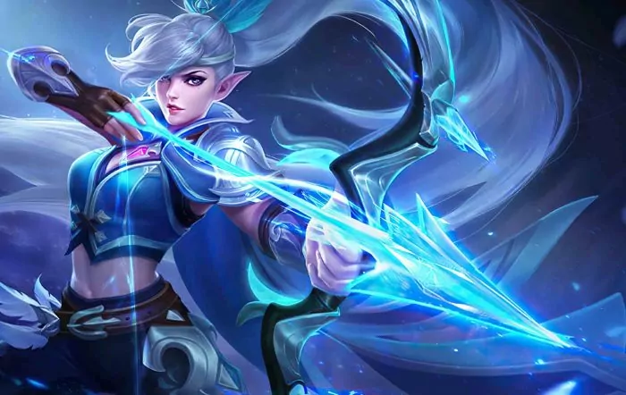
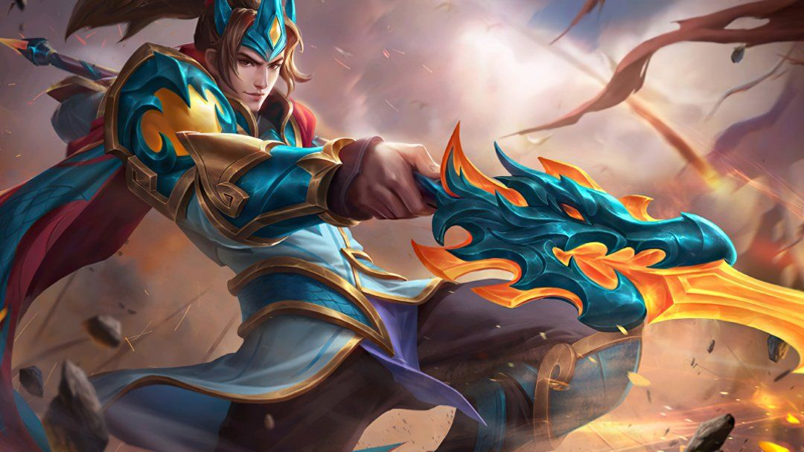
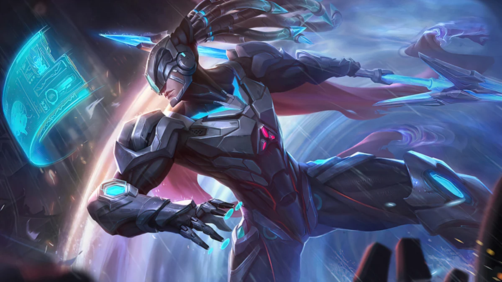
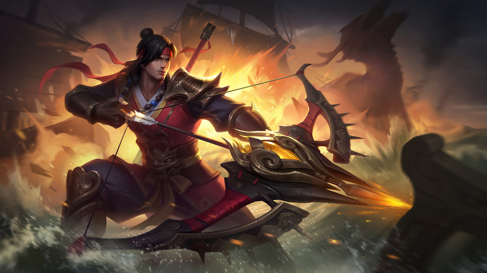

Contact

Miya
Background Story:
Miya lived in Azrya with the other Moon Elves. She stood aloof from worldly strife, and did not expect the Demon army would attack suddenly. In order to protect her homeland, Miya, as the Priestess of the Moon, led the other Moon Elves in a defense against foreign enemies.
Skills:
She possesses attack speed and multi-shot buffs, decent crowd control, and an ultimate that can be used to initiate or escape, making her a favorite among beginners and intermediate players.

Zilong
Background Story:
The young
Zilong was separated from his family in an accident and was later taken in by the Great Dragon, where he practiced with Ling in the secret realm of the Dragon Altar, eventually becoming the heir of the Great Dragon, taking on the important task of protecting, the Cadia Riverlands.
Skills:
Zilong is an agile Mobile Legends hero with burst damage. His passive boosts attack speed, and his skills let him charge, slow enemies, and gain a shield. His ultimate makes him unstoppable, allowing him to execute low-health targets.

Alpha
Background Story:
Alpha had a body of flesh and a cortex the same as that of a young adult male, yet at the same time, he was in reality still a newborn being. Like a puppet, he relied upon Octavius and was at his disposal. Alpha's first mission was to destroy the traitor, Saber.
Skills:
Alpha is a fighter hero in Mobile Legends known for sustained damage and crowd control. His passive boosts basic attacks, while Energy Wave slows enemies. Charge dashes forward, knocking back foes and granting a shield. His ultimate, Death Sonata, delivers powerful strikes, making him effective at dealing damage and disrupting enemies.

Yi Sun-Shin
Background Story:
Sun-shin is portrayed as a warrior with mastery over both land and sea. His background includes a tragic past where he lost his family, fueling his determination to protect his homeland. He wields the power of the "Turtle Ship," a unique vessel that reflects his naval prowess, and his skills highlight his ability to control water, summoning waves to aid him in battle.
Skills:
Yi Sun-shin is a versatile marksman in Mobile Legends. His passive enhances basic attacks, while Chakram throws a damaging blade. Korean War boosts mobility and attack speed, and his ultimate, Guiding Wind, releases a wave of arrows for area damage and vision. He excels as both a damage dealer and utility support.
Back to TOP